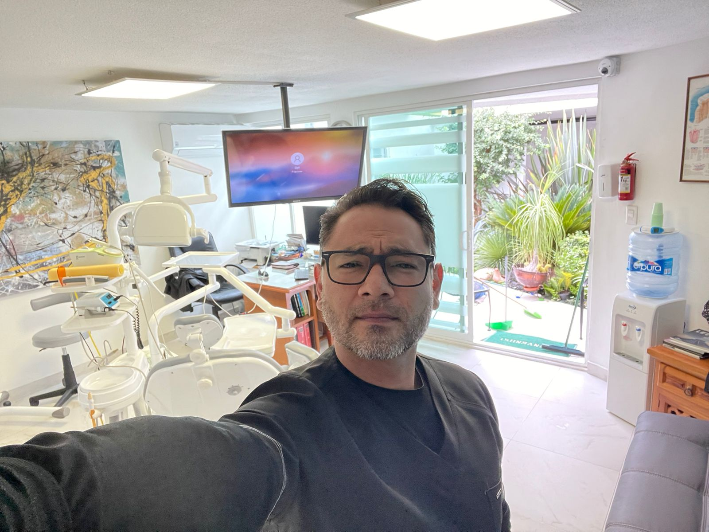

How it all started for Odonto Guru
Some of you may already met us in different dental offices or maybe we haven't met yet but you were a patient of Dr Graffski. Maybe you are a completely new patient looking for the best quality dental office in the area. One way or another, I am sure we will become friends!
“Odonto Guru” is a brand-new dental office, owned and operated by Dr. Emmanuel Fernández who recently moved from Puebla, Mexico to the United States in pursuit of continuing education and better career opportunities. Dr. Fernández bought an existing dental office "Jupiter Dental Spa". Previous owner, Dr Graffski, decided to sell his practice during COVID-19 pandemic in October 2020 because he was afraid to get sick as he was very old and had some medical issues that put him into direct risk. Dr Graffski owned and ran "Jupiter Dental Spa" for 40 years, and although it was a small practice, he got many loyal customers over the years.
Dr Fernandez and his team are happy to welcome you in "Odonto Guru" and offer free evaluation and a cleaning for all previous patients of Dr Graffski!!!
If you are a new patient don't get discouraged though, we got some amazing special deals for everyone!
Dr Fernández worked as a dentist for over 15 years in Mexico and owned his dental office “Odontologia Integral” in Puebla, Mexico for 14 years prior to the move. His dental office in Mexico has more than 1500 loyal customers. His customers are mostly his friends and their families, as well as some people to whom he was recommended by his friends. Odontologia Integral is operating and being managed by Dr Fernández’ family and business partners who are dentists alike. Although Dr. Fernández doesn’t live in Mexico anymore he travels there constantly to attend extremely rare and complicated cases he is interested in.
What Services Do We Offer
- Check-ups
- Dental cleanings, including deep cleanings
- Teeth whitening (chemical or lazer)
- Decay removal and fillings
- Crowns
- Bridges
- Root canals
- Teeth extractions (including impacted teeth and complicated surgeries)
- Brackets
New In Odonto Guru:
- 2-day dental crowns
- Night and sport guards
- Implants (any level of difficulty)
- Cosmetic surgeries
- Hollywood smile
- Miorelaxation guards
- And much more
What to Expect During Your Visit
After the dentist takes your health history, he will complete a full exam, including assessing your teeth, gums, and tongue. The dentist is checking for any signs or symptoms of disease. This exam is important for warding off any problems that may become serious and helping maintain the best oral health possible. After your exam you can expect your dentist to take x-rays of your teeth. This may seem strange, but your teeth are bones too! Whether or not your dentist wants to take x-rays may depend on your age, any signs or symptoms observed during your exam, or not having previous records to consult. These X-rays are important to diagnose any problems that may not be visible from the exam, including issues with the jawbones, any impacted teeth, abscesses, or cysts, or tooth decay. If you are pregnant it is important that you opt out of the x-ray at this visit. A panoramic X-ray may be an available option. This X-ray will provide a more clear and complete view of your mouth in one picture. It also helps the dentist see your bite better. After the X-ray the final step will be a complete cleaning by the dental hygienist or your dentist. Whoever is completing the cleaning will use a special set of instruments. These instruments are important to scraping the bottom of the teeth near the gumline where plaque and tartar build up. It is important to remove this build up as it can cause gum-disease, cavities, and bad breath. After removing all of the plaque the hygienist will use an electric toothbrush to polish your teeth. Lastly, they will have you rinse and they will floss for you. Your teeth will be squeaky clean, and your smile will never look better!
We care for your safety
To control infections that can spread due to exposure from bloodborne pathogens, OSHA standards pertaining to dental offices require that any equipment and surface areas that come in contact with blood or other material that could carry infections be cleaned and decontaminated. Dental practice employees use an approved disinfectant after a procedure has been completed or after spills of any materials that could carry infection, such as blood or saliva.
We use the strongest but the safest disinfectants for your safety. We employ special air
conditioning and filtrating systems with ionization which helps prevent many air-born infections
and viruses.
Since COVID-19 we got some new equipment for air filtration and purification as well as sterialization.
Moreover, we use special UV-lapms that are proven to kill 99.9% of the known viruses.
All our dental staff has been vacinated against COVID-19 virus.